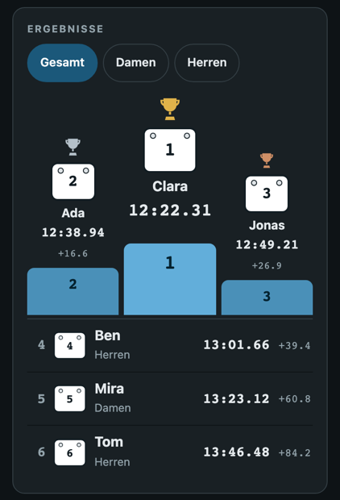
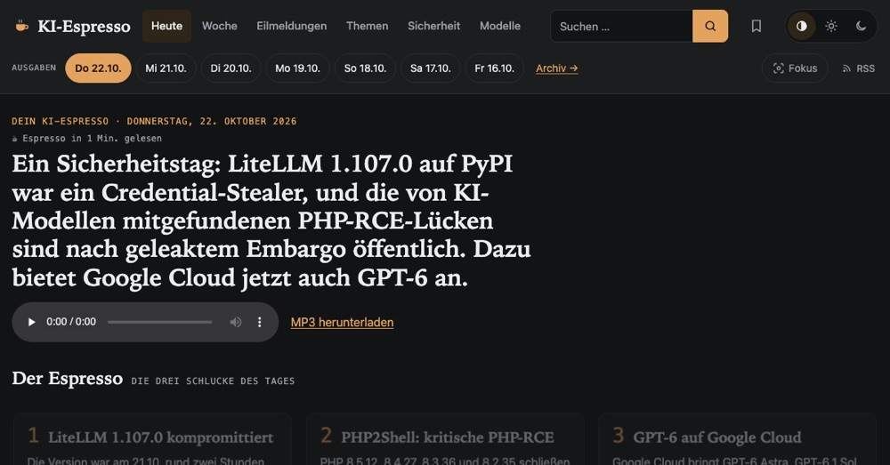
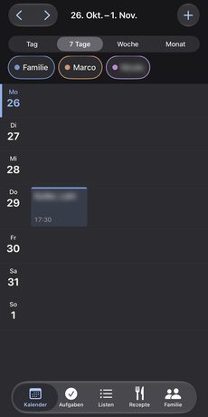
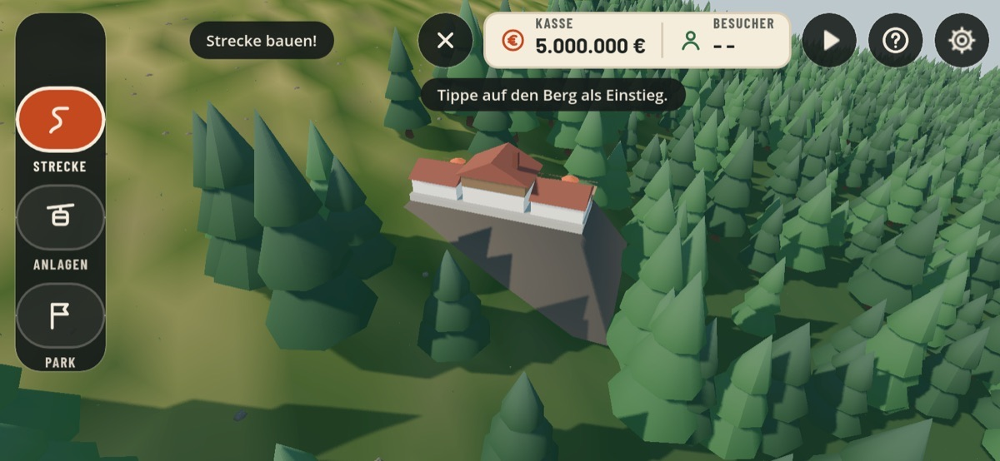
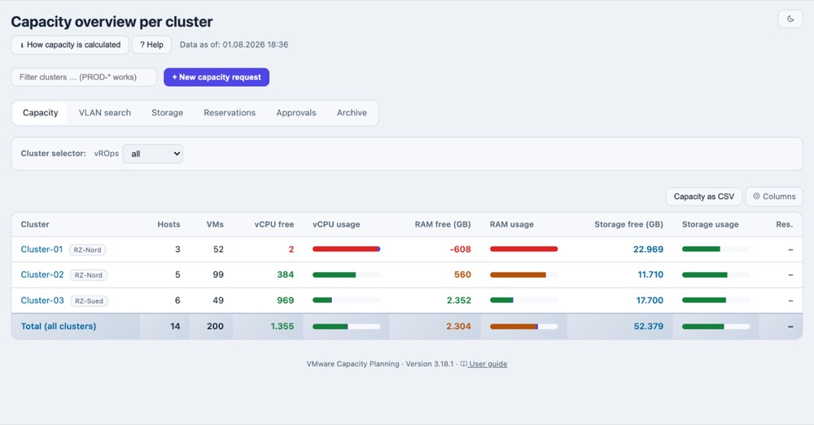
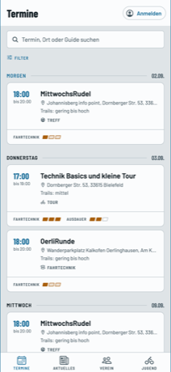
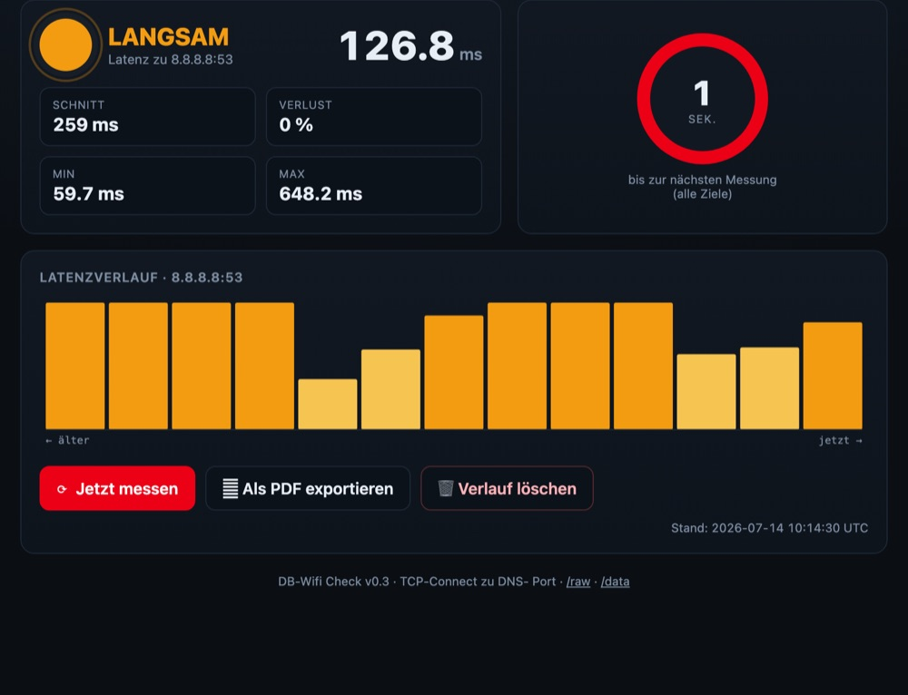
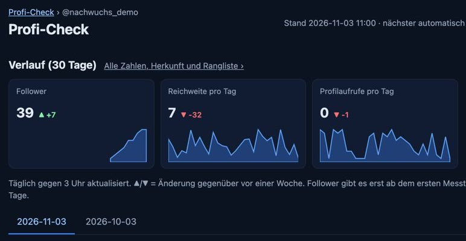

Hallo, ich bin Marco.
Ich baue, was ich brauche.
Teamleiter in der IT · Bastler · Mountainbiker
Abends baue ich mit Claude Dinge, die ich selbst brauche – vom Zeitmesser fürs Rennen bis zur KI-Morgenzeitung.
Was ich gebaut habe
Von der Lichtschranke bis zum Familienkalender.

einfachstoppen
Rennen stoppen mit zwei Handys. Kein Konto, keine Installation. Dazu Lichtschranke und Kamera-App als genauere Zeitquellen – und ein Comic in 38 Sekunden.

ki-espresso.de
Jeden Morgen die KI-Nachrichten auf Deutsch, zum Lesen und Hören.
ki-espresso.de
Family App
Familienkalender fürs iPhone und iPad, mit Abgleich zu Outlook.
family.bockelbrink.net
My little Bikepark
Strecken in den Ettelsberg zeichnen und Besucher anlocken.
mylittlebikepark.de
Kapazitätsplanung
Wie viel Platz ist in VMware- und Kubernetes-Clustern frei, und wer hat schon reserviert? Liest Aria Operations und Prometheus.

MTB Bielefeld
Termine, Anmeldungen und Fotoalben für den Verein.
Kein Link: steht in keinem App Store.

db-wifi-check
Misst im Cluster, wie schnell DNS-Server antworten.

insta-manager
Instagram-Beiträge für den Verein planen, von Claude prüfen lassen und erst nach Freigabe veröffentlichen – Kinderkonten nur mit OK der Eltern.
Kein Link: nur für den Verein.
zitadel-netbird-sync
Zitadel-Projekte als NetBird-Gruppen, auch mit NetBird Cloud.
claude-matrix-bot
Ein Chat-Bot, der mein Home Assistant vom Handy aus bedient.